Plot a Color Legend
colorlegend.RdFunction to generate a color legend, the legend may be added to an existing plot or drawn in a separate plotting window.
colorlegend(color = NULL, ncol = NULL, x = NULL, breaks = NULL,
pos = "center", shift = 0.02, side.legend = 1L, side.ticks = 1L,
range = NULL, lrange = NULL, width = 0.25, height = 0.05,
scale = TRUE, xlim = NULL, ylim = NULL, plot = NULL, full = FALSE,
add = FALSE, col.border = "black", lty.border = 1L, lwd.border = 1L,
ticks = TRUE, at = NULL, col.ticks = "black", lwd.ticks = 1L,
lty.ticks = 1L, length.ticks = 0.3, labels = NULL,
distance.labels = 0, col.labels = "black", cex.labels = 1L,
digits = 2L, swap = FALSE, symmetric = TRUE, xpd = NULL,
title = NULL, side.title = 2, shift.title = c(0, 0),
cex.title = 1, ...)Arguments
- color
Character, integer. The colors for the legend, may also be a function, e.g.
colors = heat.colors.- ncol
Integer, the number of different colors that should be generated if
coloris a function.- x
Numeric, values for which the color legend should be drawn.
- breaks
Numeric, a set of breakpoints for the colors: must give one more breakpoint than
ncol.- pos
Character, numeric. The position of the legend. Either a numeric vector, e.g.
pos = c(0.1, 0.2)will add the legend at the 10\(\%\) point in the x-direction and at the 20\(\%\) point in the y-direction of the plotting window, may also be negative, or one of the following:"bottomleft","topleft","topright","bottomright","left","right","top","bottom"and"center".- shift
Numeric, if argument
posis a character,shiftdetermines the distance of the legend from the plotting box.- side.legend
Integer, if set to
2the legend will be flipped by 90 degrees.- side.ticks
Integer, if set to
2, the ticks and labels will be on the opposite site of the legend.- range
Numeric, specifies a range for
xvalues for which the legend should be drawn.- lrange
Numeric, specifies the range of legend.
- width
Numeric, the width of the legend, if
scale = TRUEthe width is proportional to the x-limits of the plotting window.- height
Numeric, the height of the legend, if
scale = TRUEthe height is proportional to the y-limits of the plotting window.- scale
Logical, if set to
TRUE, thewidthandheightof the legend will be calculated proportional to the x- and y-limits of the plotting window.- xlim
Numeric, the x-limits of the plotting window the legend should be added for, numeric vector, e.g., returned from function
range.- ylim
Numeric, the y-limits of the plotting window the legend should be added for, numeric vector, e.g., returned from function
range.- plot
Logical, if set to
TRUE, the legend will be drawn in a separate plotting window.- full
Logical, if set to
TRUE, the legend will be drawn using the full window range.- add
Logical, if set to
TRUE, the legend will be added to an existing plot.- col.border
The color of the surrounding border line of the legend.
- lty.border
The line type of the surrounding border line of the legend.
- lwd.border
The line width of the surrounding border line of the legend.
- ticks
Logical, if set to
TRUE, ticks will be added to the legend.- at
Numeric, specifies at which locations ticks and labels should be added.
- col.ticks
The colors of the ticks.
- lwd.ticks
The line width of the ticks.
- lty.ticks
The line type of the ticks.
- length.ticks
Numeric, the length of the ticks as percentage of the
heightorwidthof the colorlegend.- labels
Character, specifies labels that should be added to the ticks.
- distance.labels
Numeric, the distance of the labels to the ticks, proportional to the length of the ticks.
- col.labels
The colors of the labels.
- cex.labels
Text size of the labels.
- digits
Integer, the decimal places if labels are numerical.
- swap
Logical, if set to
TRUEcolors will be represented in reverse order.- symmetric
Logical, if set to
TRUE, a symmetric legend will be drawn corresponding to the+- max(abs(x))value.- xpd
Sets the
xpdparameter in functionpar.- title
Character, a title for the legend.
- side.title
Integer,
1or2. Specifies where the legend is placed, either on top ifside.title = 1or at the bottom ifside.title = 2.- shift.title
Numeric vector of length 2. Specifies a possible shift of the title in either x- or y-direction.
- cex.title
Text size for the title.
- ...
Other graphical parameters to be passed to function
text.
Value
A named list with the colors generated, the breaks and the function map, which may
be used for mapping of x values to the colors specified in argument colors, please
see the examples below.
Examples
## Play with colorlegend.
colorlegend()
colorlegend(side.legend = 2)
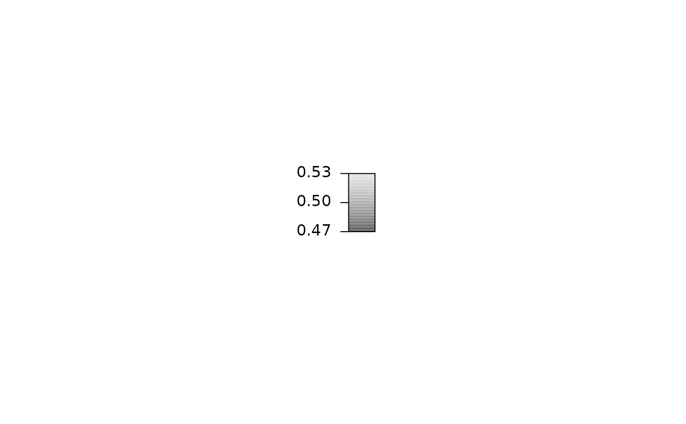
colorlegend(side.legend = 2, side.ticks = 2)
colorlegend(height = 2)
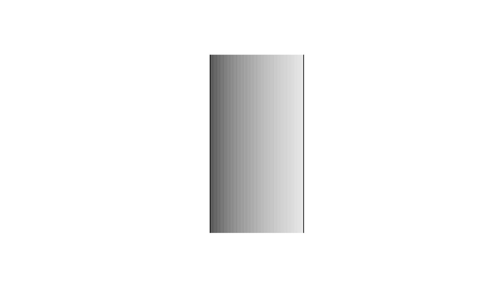
colorlegend(width = 1, height = 0.8, scale = FALSE,
pos = c(0, 0.2), length.ticks = 0.5)
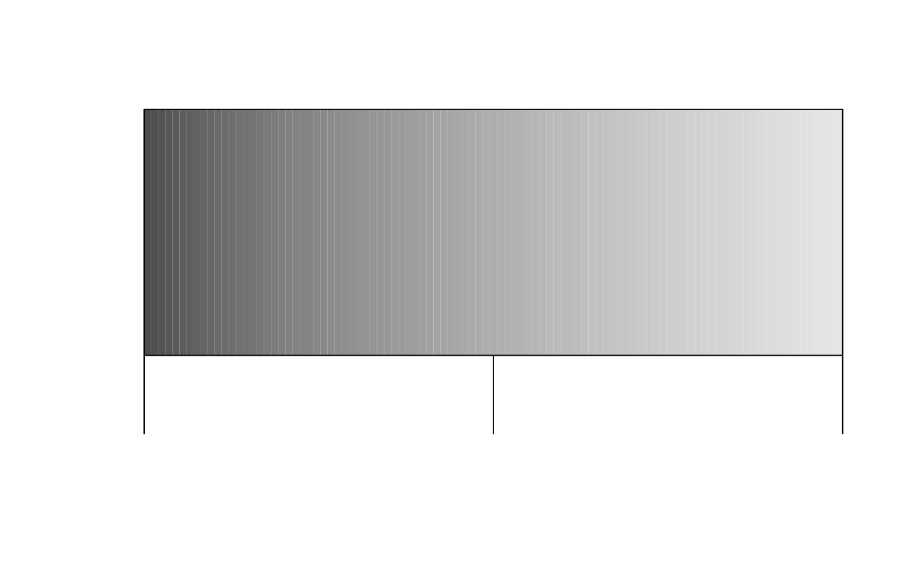
colorlegend(color = heat.colors, ncol = 9)
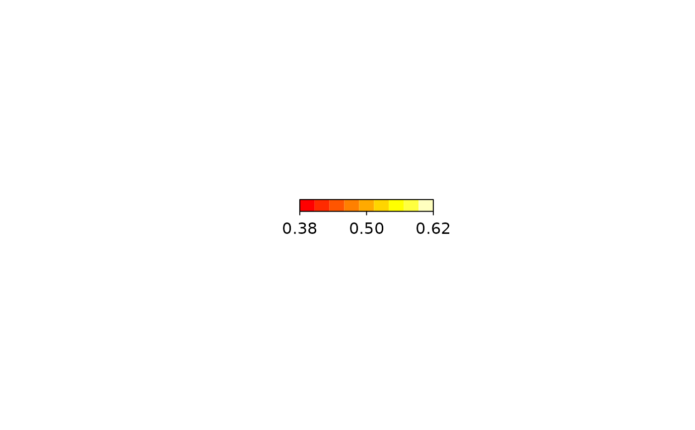
colorlegend(color = heat.colors, ncol = 9, swap = TRUE)
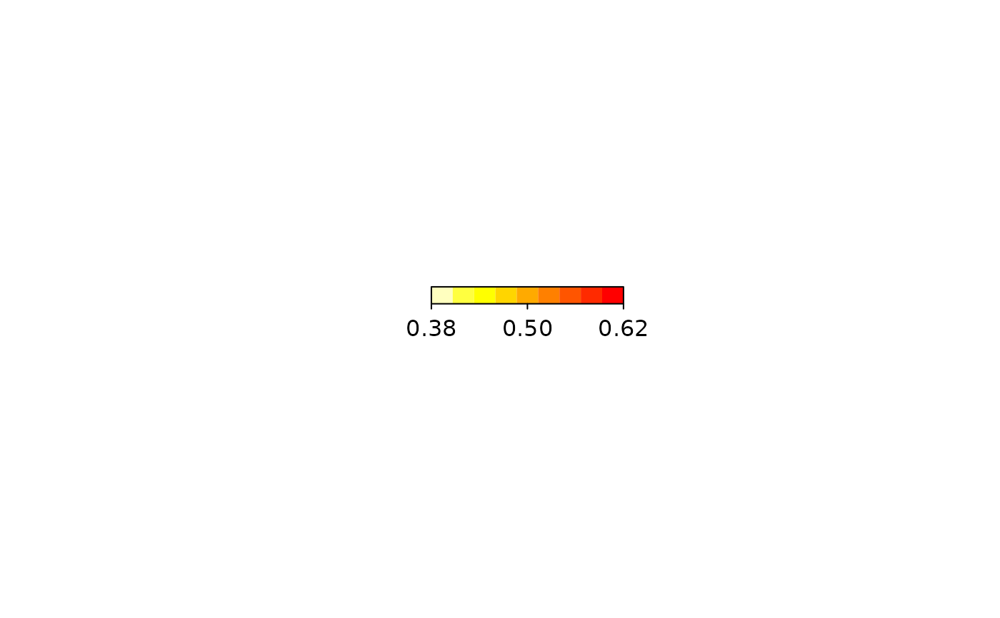
colorlegend(pos = "bottomleft")
colorlegend(pos = "topleft")
colorlegend(pos = "topright")
colorlegend(pos = "bottomright")
 ## Take x values for the color legend.
x <- runif(100, -2, 2)
colorlegend(color = diverge_hcl, x = x)
colorlegend(color = diverge_hcl, x = x, at = c(-1.5, 0, 1.5))
colorlegend(color = diverge_hcl, x = x, at = c(-1.5, 0, 1.5),
labels = c("low", "middle", "high"))
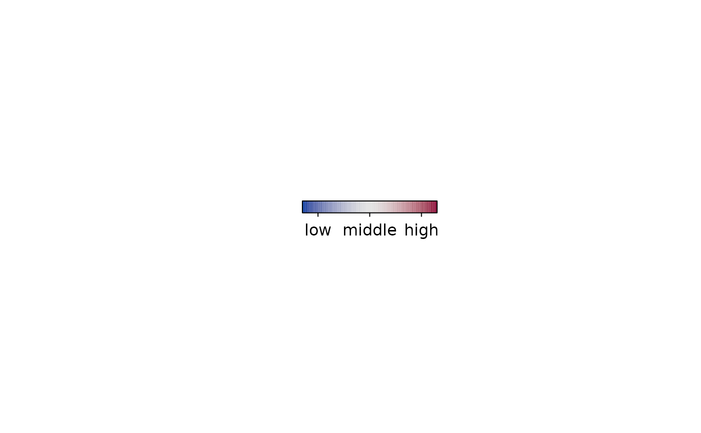
colorlegend(color = rainbow_hcl, x = x, at = c(-1.5, 0, 1.5),
labels = c("low", "middle", "high"), length.ticks = 1.5)
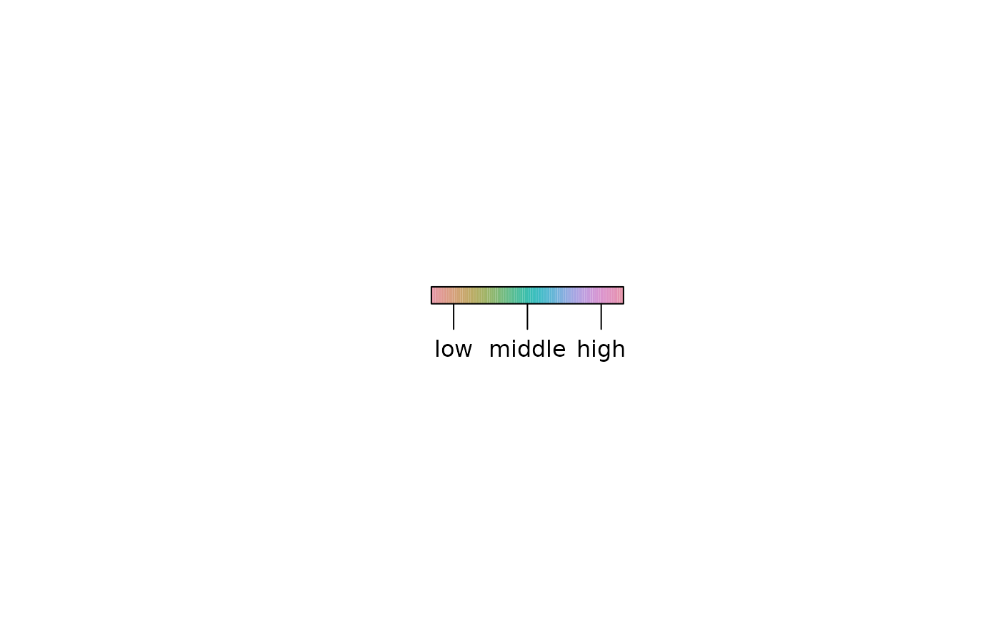
colorlegend(color = heat_hcl, x = x, at = c(-1.5, 0, 1.5),
labels = c("low", "middle", "high"), length.ticks = 1.5,
lwd.border = 2, lwd.ticks = 2, cex.labels = 1.5, font = 2)
colorlegend(color = topo.colors, x = x, at = c(-1.5, 0, 1.5),
labels = c("low", "middle", "high"), length.ticks = 1.5,
lwd.border = 2, lwd.ticks = 2, cex.labels = 1.5, font = 2,
col.border = "green3", col.ticks = c(2, 5, 2),
col.labels = c(6, 4, 3))
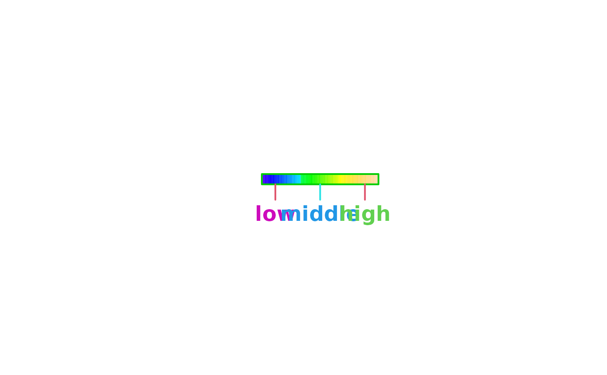
colorlegend(color = diverge_hsv, x = x, at = c(-1.5, 0, 1.5),
labels = c("low", "middle", "high"), length.ticks = 1.5,
lwd.border = 2, lwd.ticks = 2, cex.labels = 1.5, font = 2,
col.border = "green3", col.ticks = c(2, 5, 2),
col.labels = c(6, 4, 3), lty.border = 2, lty.ticks = c(2, 3, 2))
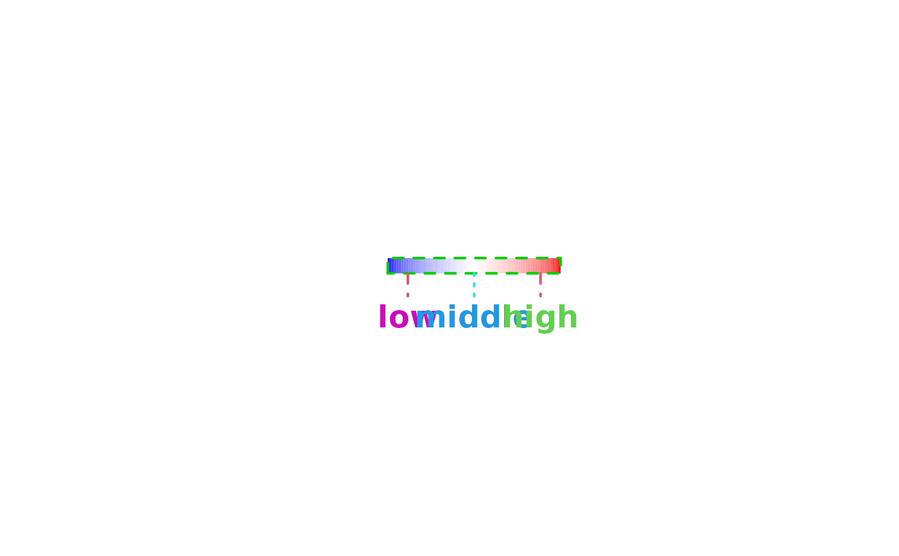
colorlegend(color = diverge_hsv, x = x, at = c(-1.5, 0, 1.5),
labels = c("low", "middle", "high"), length.ticks = 1.5,
lwd.border = 2, lwd.ticks = 2, cex.labels = 1.5, font = 2,
col.border = "green3", col.ticks = c(2, 5, 2),
col.labels = c(6, 4, 3), lty.border = 2, lty.ticks = c(2, 3, 2),
ncol = 3)
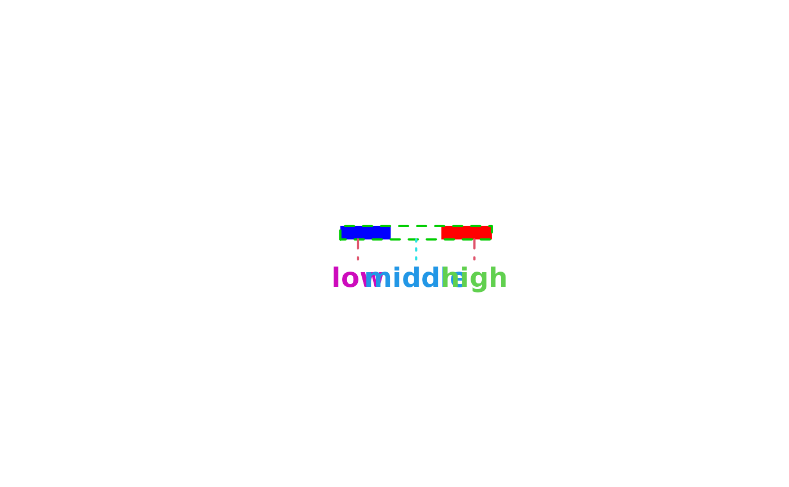
colorlegend(color = c("red", "white", "red"), x = x, at = c(-1.5, 0, 1.5),
labels = c("low", "middle", "high"), length.ticks = 1.5,
lwd.border = 2, lwd.ticks = 2, cex.labels = 1.5, font = 2,
col.border = "green3", col.ticks = c(2, 5, 2),
col.labels = c(6, 4, 3), lty.border = 2, lty.ticks = c(2, 3, 2),
ncol = 3, breaks = c(-2, -1, 1, 2))
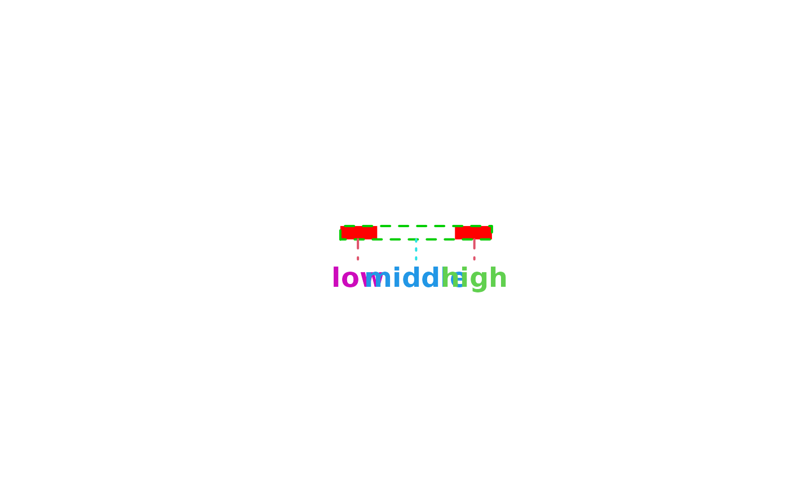
colorlegend(color = diverge_hcl, x = x, range = c(-3, 3))
colorlegend(color = diverge_hcl, x = x, range = c(-3, 3), lrange = c(-6, 6))
## Combine plot with color legend.
n <- 100
x <- y <- seq(-3, 3, length.out = n)
z <- outer(sin(x), cos(x))
pal <- colorlegend(color = diverge_hcl, x = z, plot = FALSE)
op <- par(no.readonly = TRUE)
par(mar = c(4.1, 4.1, 1.1, 1.1))
layout(matrix(c(1, 2), nrow = 1), widths = c(1, 0.3))
image(x = x, y = y, z = z, col = pal$colors, breaks = pal$breaks)
par(mar = c(4.1, 0.1, 1.1, 3.1))
colorlegend(color = diverge_hcl, x = z, plot = TRUE, full = TRUE,
side.legend = 2, side.ticks = 2)
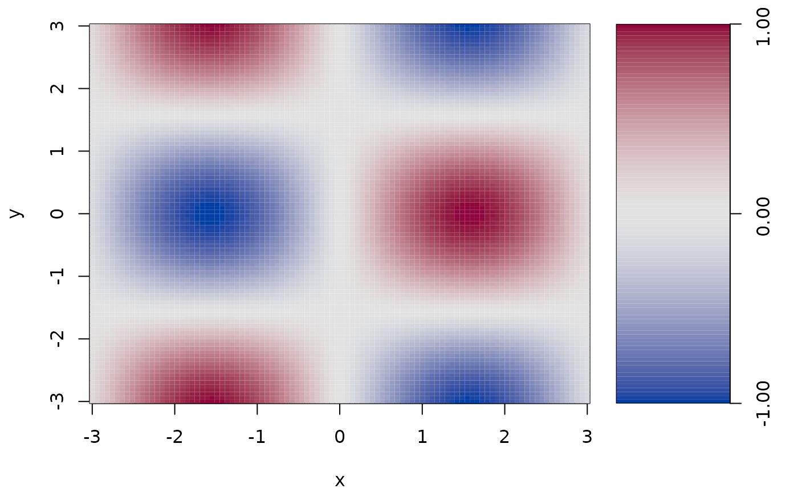
par(op)
## Another example with different plot.
n <- 50
x <- sin(seq(-3, 3, length.out = n))
pal <- colorlegend(color = diverge_hcl, x = x, plot = FALSE)
op <- par(no.readonly = TRUE)
par(mar = c(7.1, 4.1, 1.1, 1.1))
barplot(x, border = "transparent", col = pal$map(x))
colorlegend(color = diverge_hcl, x = x, plot = FALSE, add = TRUE,
xlim = c(0, 60), ylim = c(-1, 1), pos = c(0, -0.15), xpd = TRUE,
scale = FALSE, width = 60, height = 0.15,
at = seq(min(x), max(x), length.out = 9))
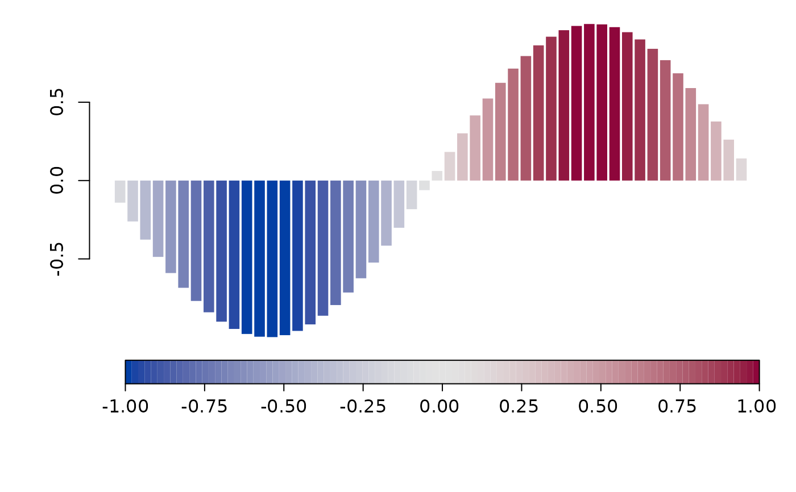
par(op)
## Take x values for the color legend.
x <- runif(100, -2, 2)
colorlegend(color = diverge_hcl, x = x)
colorlegend(color = diverge_hcl, x = x, at = c(-1.5, 0, 1.5))
colorlegend(color = diverge_hcl, x = x, at = c(-1.5, 0, 1.5),
labels = c("low", "middle", "high"))
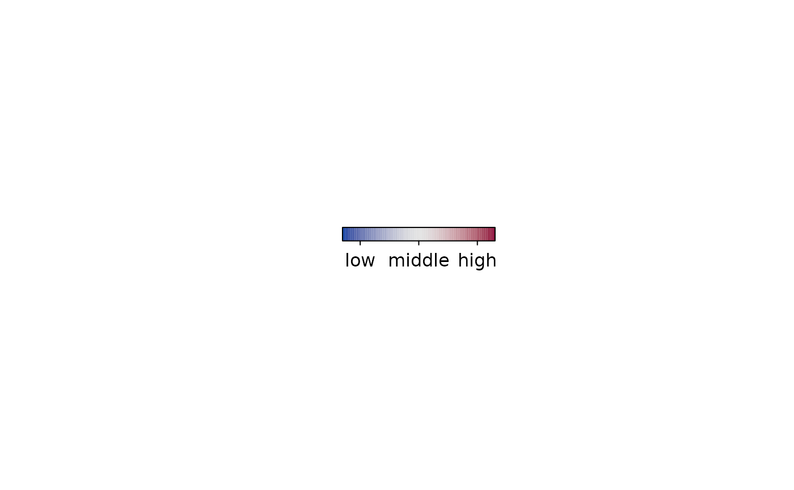
colorlegend(color = rainbow_hcl, x = x, at = c(-1.5, 0, 1.5),
labels = c("low", "middle", "high"), length.ticks = 1.5)
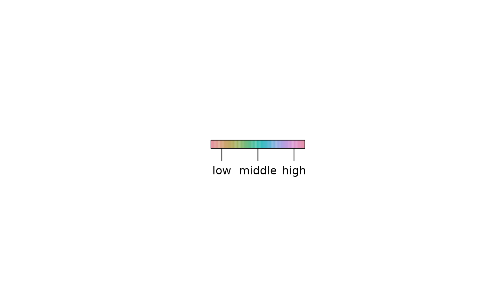
colorlegend(color = heat_hcl, x = x, at = c(-1.5, 0, 1.5),
labels = c("low", "middle", "high"), length.ticks = 1.5,
lwd.border = 2, lwd.ticks = 2, cex.labels = 1.5, font = 2)
colorlegend(color = topo.colors, x = x, at = c(-1.5, 0, 1.5),
labels = c("low", "middle", "high"), length.ticks = 1.5,
lwd.border = 2, lwd.ticks = 2, cex.labels = 1.5, font = 2,
col.border = "green3", col.ticks = c(2, 5, 2),
col.labels = c(6, 4, 3))
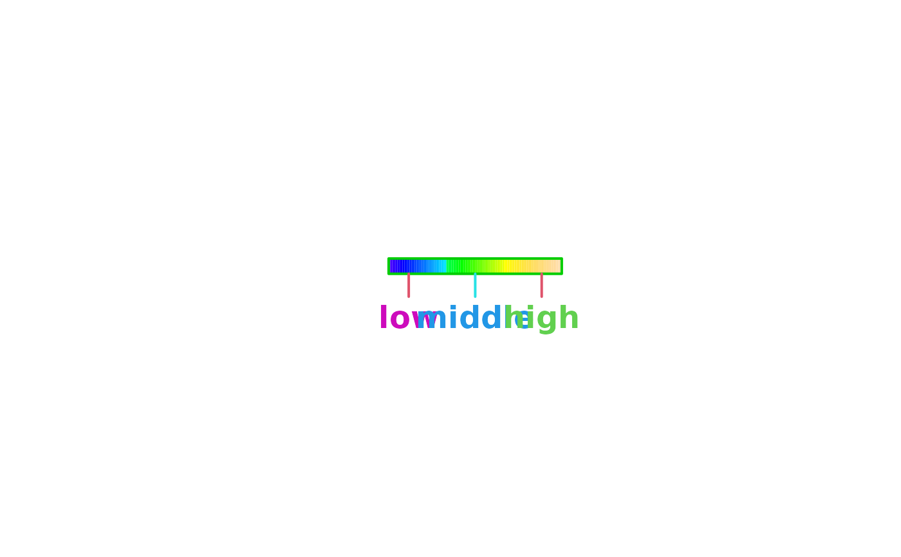
colorlegend(color = diverge_hsv, x = x, at = c(-1.5, 0, 1.5),
labels = c("low", "middle", "high"), length.ticks = 1.5,
lwd.border = 2, lwd.ticks = 2, cex.labels = 1.5, font = 2,
col.border = "green3", col.ticks = c(2, 5, 2),
col.labels = c(6, 4, 3), lty.border = 2, lty.ticks = c(2, 3, 2))
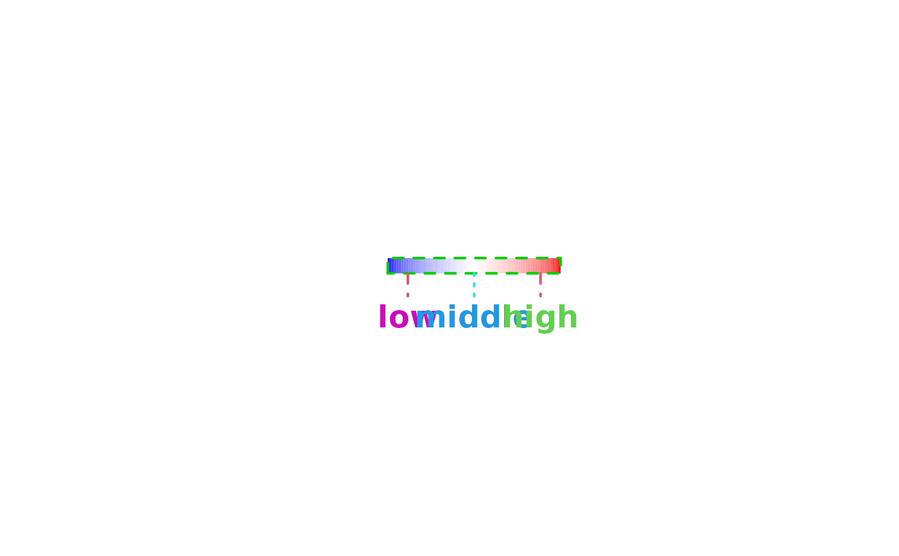
colorlegend(color = diverge_hsv, x = x, at = c(-1.5, 0, 1.5),
labels = c("low", "middle", "high"), length.ticks = 1.5,
lwd.border = 2, lwd.ticks = 2, cex.labels = 1.5, font = 2,
col.border = "green3", col.ticks = c(2, 5, 2),
col.labels = c(6, 4, 3), lty.border = 2, lty.ticks = c(2, 3, 2),
ncol = 3)
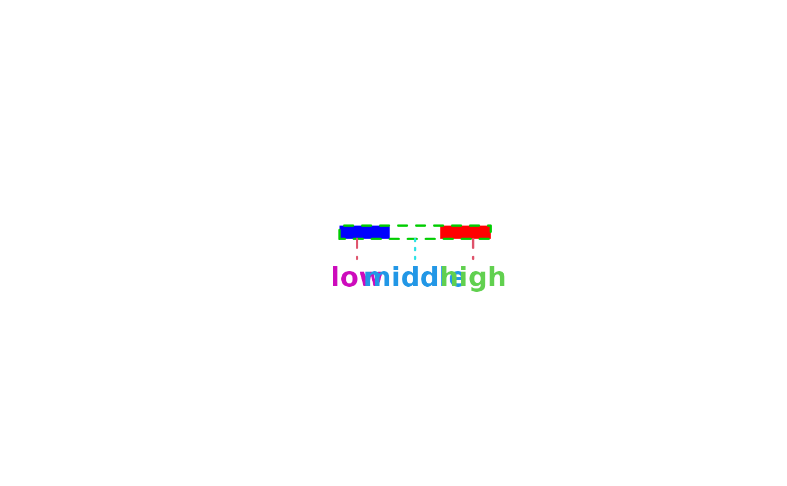
colorlegend(color = c("red", "white", "red"), x = x, at = c(-1.5, 0, 1.5),
labels = c("low", "middle", "high"), length.ticks = 1.5,
lwd.border = 2, lwd.ticks = 2, cex.labels = 1.5, font = 2,
col.border = "green3", col.ticks = c(2, 5, 2),
col.labels = c(6, 4, 3), lty.border = 2, lty.ticks = c(2, 3, 2),
ncol = 3, breaks = c(-2, -1, 1, 2))
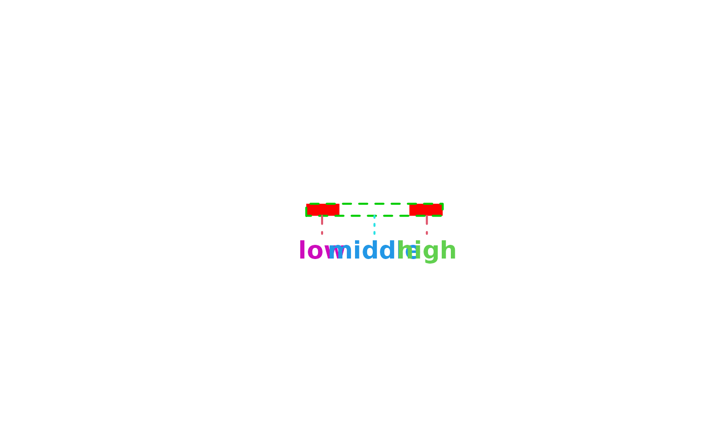
colorlegend(color = diverge_hcl, x = x, range = c(-3, 3))
colorlegend(color = diverge_hcl, x = x, range = c(-3, 3), lrange = c(-6, 6))
## Combine plot with color legend.
n <- 100
x <- y <- seq(-3, 3, length.out = n)
z <- outer(sin(x), cos(x))
pal <- colorlegend(color = diverge_hcl, x = z, plot = FALSE)
op <- par(no.readonly = TRUE)
par(mar = c(4.1, 4.1, 1.1, 1.1))
layout(matrix(c(1, 2), nrow = 1), widths = c(1, 0.3))
image(x = x, y = y, z = z, col = pal$colors, breaks = pal$breaks)
par(mar = c(4.1, 0.1, 1.1, 3.1))
colorlegend(color = diverge_hcl, x = z, plot = TRUE, full = TRUE,
side.legend = 2, side.ticks = 2)
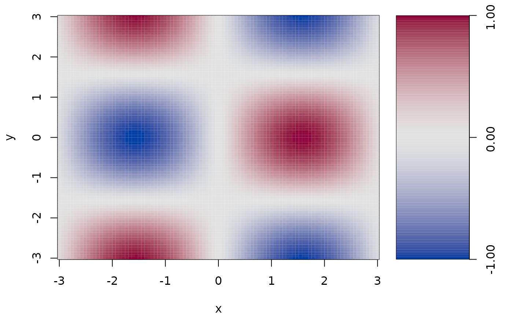
par(op)
## Another example with different plot.
n <- 50
x <- sin(seq(-3, 3, length.out = n))
pal <- colorlegend(color = diverge_hcl, x = x, plot = FALSE)
op <- par(no.readonly = TRUE)
par(mar = c(7.1, 4.1, 1.1, 1.1))
barplot(x, border = "transparent", col = pal$map(x))
colorlegend(color = diverge_hcl, x = x, plot = FALSE, add = TRUE,
xlim = c(0, 60), ylim = c(-1, 1), pos = c(0, -0.15), xpd = TRUE,
scale = FALSE, width = 60, height = 0.15,
at = seq(min(x), max(x), length.out = 9))
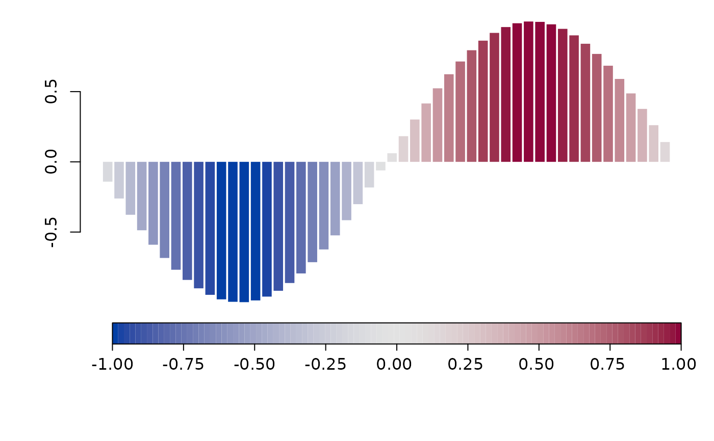
par(op)